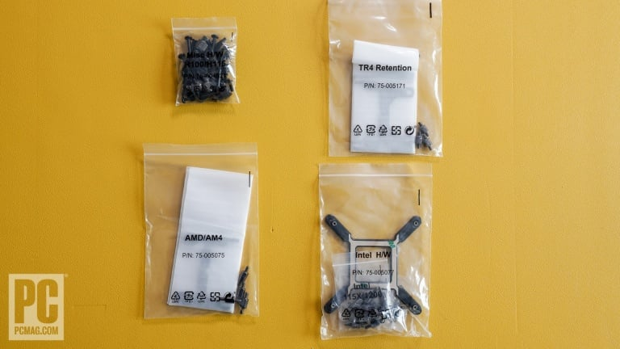
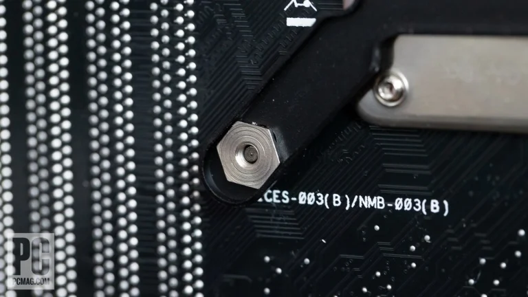

7. Mount the CPU Cooler and Radiator
This part of the build will vary the most according to whether you went with an AMD or Intel processor and with liquid or air cooling. Lots of factors in play here.
We're installing an all-in-one (AIO) liquid cooler, which comes prefilled and assembled, in our Intel system. The Core i7-13700K CPU runs hot, and even though we won't be overclocking it, we prefer more thermal leeway for this chip than a typical air cooler would allow. We're also partial, in this glass-sided case, to the enthusiast flair that a liquid cooler and radiator will lend. But you don't have to go with liquid cooling; indeed, for most users, if a stock air cooler comes with the CPU, that cooler should suffice (as well as being cheaper than an aftermarket liquid cooler or premium air cooler). Your choice of air or liquid cooling comes down to your budget, the CPU in question, and (a secondary consideration) whether you want to show off a fancy liquid apparatus through a case side window.
This part of the build will vary the most according to whether you went with an AMD or Intel processor and with liquid or air cooling. Lots of factors in play here.
We're installing an all-in-one (AIO) liquid cooler, which comes prefilled and assembled, in our Intel system. The Core i7-13700K CPU runs hot, and even though we won't be overclocking it, we prefer more thermal leeway for this chip than a typical air cooler would allow. We're also partial, in this glass-sided case, to the enthusiast flair that a liquid cooler and radiator will lend. But you don't have to go with liquid cooling; indeed, for most users, if a stock air cooler comes with the CPU, that cooler should suffice (as well as being cheaper than an aftermarket liquid cooler or premium air cooler). Your choice of air or liquid cooling comes down to your budget, the CPU in question, and (a secondary consideration) whether you want to show off a fancy liquid apparatus through a case side window.

You may need to install a bracket from the underside of your motherboard to mount whatever cooler you use. The instructions that come with your specific cooler will vary from brand to brand, so we can't give universal advice for installing liquid coolers. In this case, the Corsair kit is pretty typical of the AIO liquid coolers out there, but remember that your manual trumps any of our generic advice. Most aftermarket coolers come with a variety of brackets and screws for various AMD and Intel sockets. Your first move should be to sort your parts and isolate the right ones for your CPU socket.
Our Corsair cooler is an all-in-one design with a radiator at one end connected via a pair of liquid-carrying hoses to a heatsink and pump assembly at the other. We sorted out the kit according to the parts required for the LGA1700 socket and put the rest aside. If you were installing this cooler on an AMD AM4 or AM5 socket, you'd use these other bits.
First, install the motherboard bracket from under the CPU socket. This bracket will accommodate the mounting apparatus for the CPU heatsink assembly from the top side. You'll need to get access to the other side of your motherboard ...

In this case, this underside bracket is used for any of several Intel socket types; you slide the mounting points to match the spacing of the holes on your motherboard and fit it through them so they poke out through the board and out the top around the CPU.
An adhesive pad on the bracket, which you peel to expose, will hold it in place. Next, the Corsair kit requires you to screw on four mounting posts from the accessory kit; it's on these posts that you'll later mount the heatsink. Flip over the case and install the four posts, finger tight, in the holes in the mounting bracket.
Depending on the design of your case, you may want to install the radiator portion of the cooler before the heatsink or vice versa. We'll do the former, since the radiator is the clumsier half. First examine the design of the radiator. You'll want to determine an airflow path for your PC case. We're mounting the radiator inside the top of the case, with its two fans blowing through the radiator and out the top. In general, with a liquid cooling system, you want the fans to blow through the radiator and this airflow to exit the case, since that air will be heated by the liquid passing through the radiator.
You'll also want to be cognizant of how the radiator tubes extend to the heat sink. Depending on your case and cooler designs, you may be limited in where you can actually place the radiator because of reach or fitment issues. Our 240mm-class radiator fits above the motherboard, and the hoses loop without kinking from there to the CPU socket. You can install the radiator with the hoses looping front to back or vice versa; make sure you test-fit which is a better arrangement before mounting.
In this cooler's accessory kit are eight washers and long screws used to mount the two fans to the radiator. The radiator uses two fans that come in the kit; mount them to the inside of the radiator as shown, orienting the fans' cabling toward the inside of the case for easier routing and hiding. You'll want to feed these cables through to the right side of the case for routing and plugging in later.

Do this before you mount the radiator. Important: The frame portion of the fan should touch the radiator; that's the exhaust side of the fan, so this orientation will pull air from inside the case and push it out this side of the fan through the radiator.
Also in the kit should be a host of short screws for mounting the radiator to the case. Once you have the radiator positioned ...
... install it using the screws, attaching them through the outside of the chassis and into the screw holes on the radiator. Make sure you're using the screw holes in the radiator and not fitting screws between fins or into other crevices in the radiator. With our Corsair case, you can slide the radiator forward or back before fully tightening, as the screw "holes" are really slots in the case. Look for the best fitment and appearance and adjust as needed.
Now to mount the heatsink assembly on the CPU. You'll notice a plastic cap over the heatsink; Corsair, like most other makers of all-in-one coolers, pre-coats the heatsink with a patch of thermal paste. You can use this existing paste; there's no reason not to, unless you're an enthusiast overclocker with a favorite brand of thermal paste. If you mess up the pad or need to reinstall it, however, you'll need to clean it and reapply fresh paste.
Right now, we're going to mount the cooler head on the socket. Corsair supplies screws that engage with the mounting posts; place the heatsink/pump assembly over the CPU and gently fit the four screws over the posts to hold it in place.
Once you're sure it won't fly off, tighten the screws in a crosswise fashion, corner to diagonally opposite corner, giving each screw an equal number of turns before moving on to the next. Don't tighten any all the way down right away; do five turns at a position before moving to the next and stop when the cooler is finger-tight. Don't over-tighten!
With the CPU cooler in place, you'll need to install the fine cables for the CPU pump, the radiator fans, and any RGB lights that come off them all. (Ours has all of the above.) Depending on the design of your AIO cooler, it may have one or more cables, so you must identify them and look for the matching headers on the motherboard.
The primary heatsink pump cable should go into the header on the motherboard called CPU_FAN (or AIO PUMP). A possible alternative may be called CPU_OPT. Follow your motherboard and cooler manuals here. If the CPU cooler has a separate connection for RGB lighting, that may need to go to an RGB or ARGB motherboard header depending on the cooler's design. If your motherboard doesn't have a matching header and the case doesn't have an RGB controller, you may need a third-party adapter or controller. Again, consult the manual.
In the case of our Corsair liquid cooler, you get a cable cluster that plugs into the top of the cooler via a USB-C connector, with a hydra of header cables trailing off it. We plugged in one (a 4-pin connector) to CPU_FAN, and a USB 2.0 10-pin header went into one of the motherboard's two USB 2.0 connectors. We also hooked up the 4-pin male connectors of the two fans attached to the radiator to the two female 4-pin connections on the hydra-head.
Circling back to air coolers and stock coolers, if you opt to use the stock air cooler that comes in the box with your CPU, it should work with the bracket that's already preinstalled on your motherboard. Alternatively, it may come with a bracket that installs from the underside. If you're using a cooler that doesn't have thermal paste preapplied, you'll need to apply some. Use a high-quality paste or the one that comes with the cooler. A $5 or $10 tube can last for multiple applications if you need more.
Different schools of thought apply to paste application: a pea-size blob in the middle, an X shape, a pattern like the five pips on a die or playing card, and so on. We vote for the pea-sized blob, spread thinly to an almost transparent layer over the whole heat spreader atop the CPU. A business card or old credit card works nicely here, if the tube of paste doesn't come with a little spatula for spreading.
Wipe off any excess, avoid spilling it over the edges, and don't overapply—the thinnest of layers should do. You can just let the pressure of the CPU cooler spread the blob itself, but in our experience that seldom achieves 100% coverage of the die. It's especially tricky with AMD Ryzen 7000 chips and their sculpted heat spreaders, which can trap paste in nooks and crannies. Less is more.
Once you've applied the paste, the mounting scheme comes down to the specific cooler maker. If the mount involves screws in each corner, do like we did with our AIO cooler and install them in a criss-cross pattern, giving each screw a few turns before moving to the next. (If you go too far with one, you may have trouble getting the others in.) Some AMD AM4 mounts use a hook-and-latch system that's a little tricky. In essence, you hook one end of a tilting bracket onto a plastic mount on the motherboard, then manipulate the other end over an opposite-side protrusion and pull down a lever to clamp it into place.
It's mechanically simple, but sometimes a little tough to engage. Some AM4 stock and aftermarket coolers, however, require you to remove the plastic mounts from the motherboard and install an underside screw mount.
Intel stock coolers, like the Laminar coolers introduced with the LGA 1700 socket, use a sort of plunger mount that goes straight into holes in the motherboard. You insert four pegs in turn through holes in the motherboard and press a plunger atop each corner, expanding the pegs inside the holes and holding the cooler in place. In our experience, these either work great the first time or can be frustrating to get to engage.
Finally, if you're using an aftermarket CPU cooler of the tall (tower) type, be aware of the airflow direction and orientation of any fans you clip on it. Generally speaking, you want air to flow through the tower cooler to cool the fins, then out toward the back or top of the case and an exhaust fan. You want to orient the cooler appropriately and mount the fan on the cooler so the airflow is in the intended direction, with the fan blowing through the cooler, not just trying to pull air through it. As with the radiator fans we discussed earlier, airflow intake is from the open side of the fan, and exhaust is through the frame side. Arrows on the edge of the fan may indicate the airflow direction as well.